Abbildung ähnlich – zeigt den Produkttyp.
Bohrhammer SDS-plus 26 mm, 800 W (netzbetrieben)
Der SDS-plus-Bohrhammer ist auf der Sanierungs- und Entkernungsbaustelle das Standardgerät für Durchbrüche, Dübel- und Ankerbohrungen sowie leichte Meißelarbeiten in Beton und Mauerwerk. Professionelle Anwender in Deutschland erwarten ein elektropneumatisches Schlagwerk mit mehreren Betriebsarten (Bohren, Hammerbohren, Meißeln), eine Sicherheitsrutschkupplung gegen Blockieren, einen verstellbaren Zusatzhandgriff mit Tiefenanschlag und eine wirksame Vibrationsdämpfung. Das Gerät muss CE-konform sein und nach EN 62841-2-6 geprüft werden; Vibrations- und Lärmwerte nach EPTA-Verfahren gehören in die deutsche Betriebsanleitung. Beim Bohren in mineralischem Untergrund ist eine Bohrstaubabsaugung nach TRGS 559 Stand der Technik – der Hammer sollte deshalb mit gängigen Absaugvorsätzen kombinierbar sein.
Technische Daten
| Nennaufnahmeleistung | 800 W |
|---|---|
| Bohr-Ø Beton (max.) | 26 mm |
| Einzelschlagenergie (EPTA 05/2009) | 2,2–2,7 J |
| Schlagzahl | ca.; 4.400 1/min |
| Werkzeugaufnahme | SDS-plus |
| Betriebsarten | Bohren, Hammerbohren, Meißeln (Meißelfixierung) |
| Spannung / Frequenz | 230 V / 50 Hz |
| Gewicht (typisch) | ca.; 2,7–3 kg |
| Zolltarifnummer (HS) | 84672191 |
EU-Normen und Vorschriften
2006/42/EGMaschinenrichtlinie (ab 20.01.2027 Maschinenverordnung (EU) 2023/1230)EN 62841-1Handgeführte motorbetriebene Elektrowerkzeuge – Allgemeine AnforderungenEN 62841-2-6Besondere Anforderungen an Hämmer (Bohr- und Schlaghämmer)2014/30/EUEMV-Richtlinie (u.; a.; EN 55014-1/-2) und RoHS 2011/65/EU2002/44/EGVibrations-Richtlinie (LärmVibrationsArbSchV) – Vibrationswerte in der AnleitungTRGS 559Mineralischer Staub – Bohrstaubabsaugung beim Bohren in Beton und MauerwerkGSGS-Zeichen Geprüfte Sicherheit (ProdSG § 20)
Passt dazu
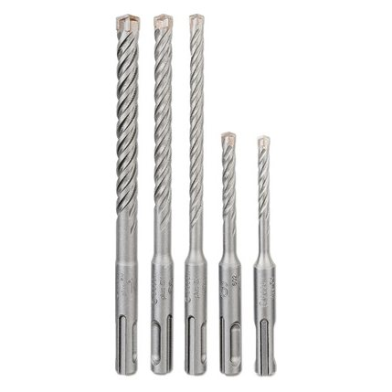
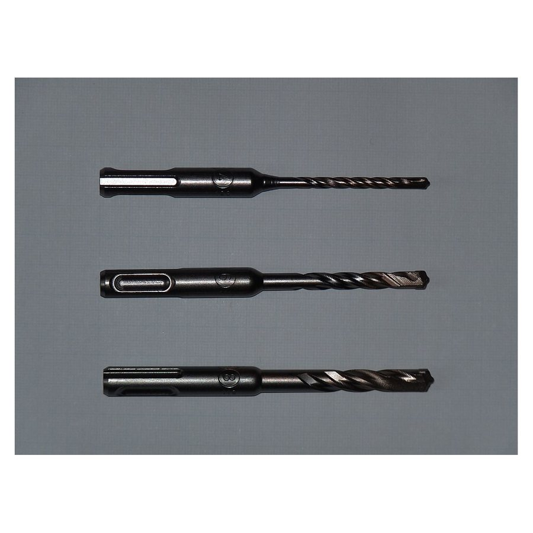

Weitere Produkte dieser Kategorie

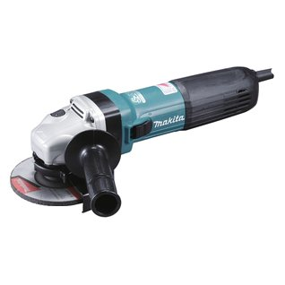

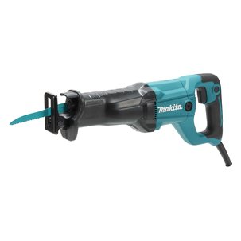

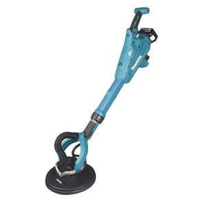
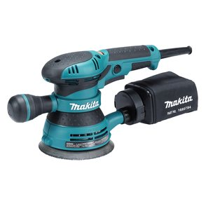


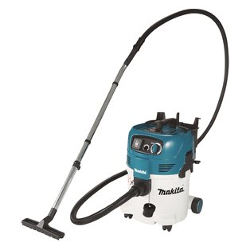
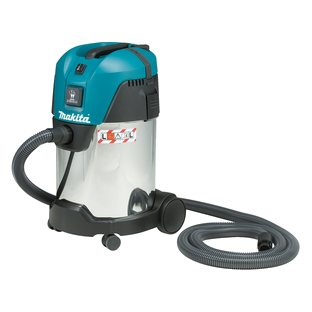
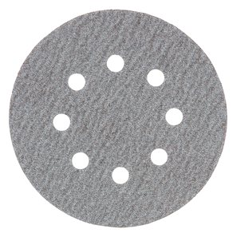
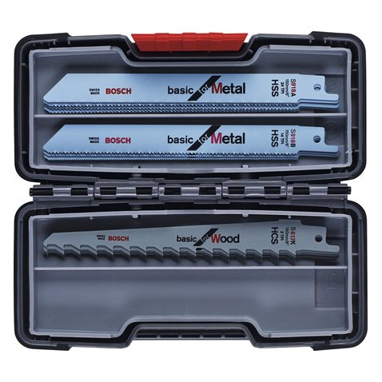
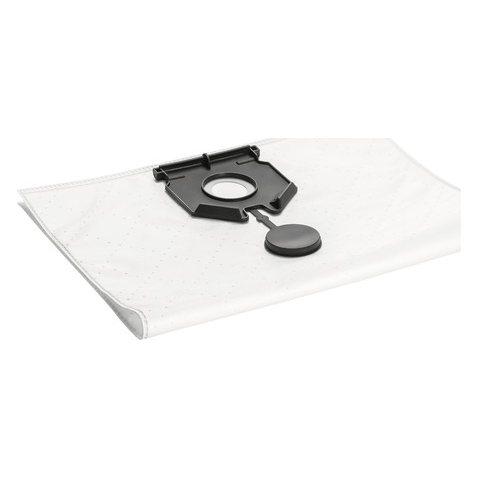

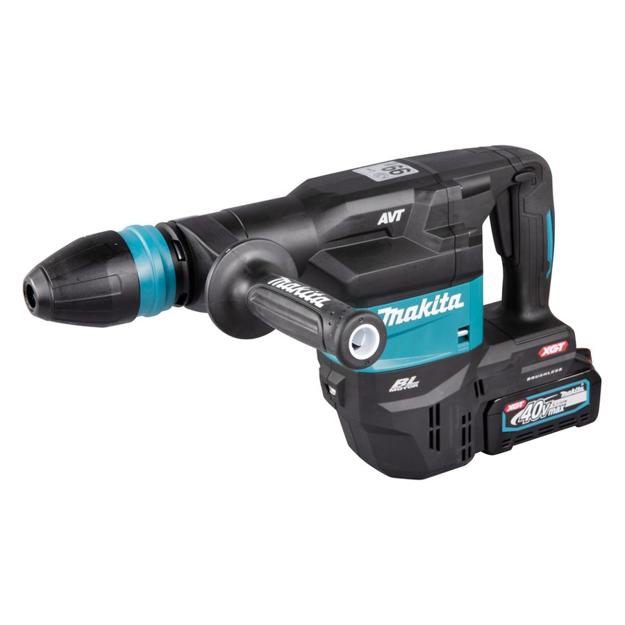


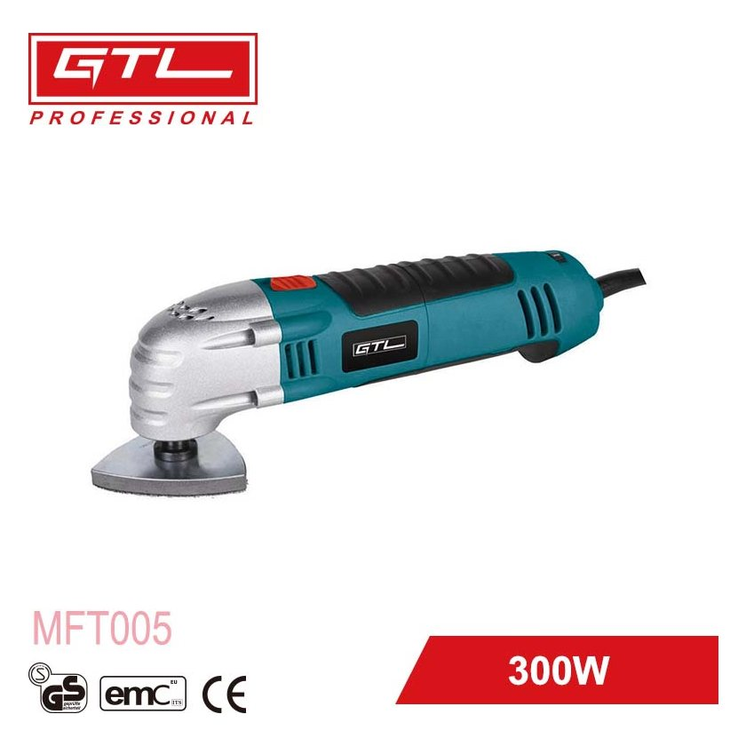


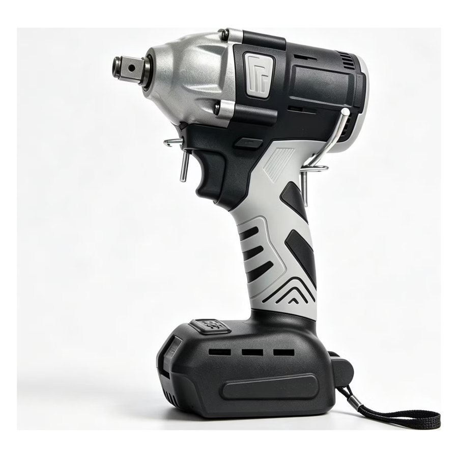

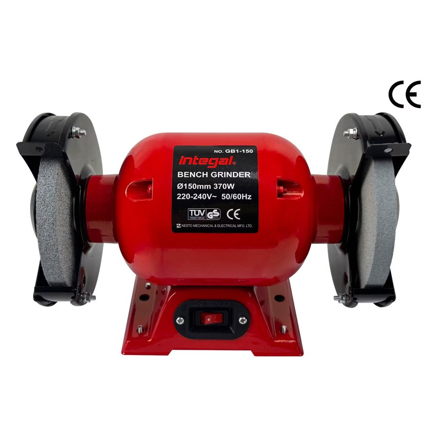